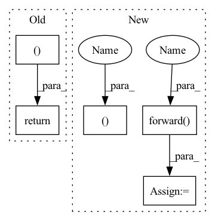

Pattern ID :15133
Before Change
with self.memory_cache.use_cache(attention_cache_handle) as cache:
print("METADATA:", cache_metadata, "CACHE", cache.mean(), "CACHE ENTRIES:", len(self.memory_cache._allocated_tensors))
cache[...] += 1
return (inputs[0] + cache.flatten()[0]After Change
assert isinstance(self.module, BloomBlock) and cache.shape[0] == 2 and cache.ndim == 5
layer_past = past_k, past_v = cache[0, :, :prefix_length], cache[1, :, :prefix_length]
print(past_k.shape, past_v.shape)
hidden_states, (new_k, new_v) = self.module.forward(hidden_states , layer_past=layer_past, use_cache=True)
// todo remove these debugprints
new_length = new_v.shape[1]
assert new_length > prefix_length
assert new_k.shape[0] == past_k.shape[0] and new_v.shape[0] == past_v.shape[0]
assert new_k.shape[1] == new_length and new_v.shape[1] == new_length
assert new_k.shape[2:] == past_k.shape[2:] and new_v.shape[2:] == past_v.shape[2:]
assert torch.allclose(new_v[:, :past_v.shape[1]], past_v)
assert torch.allclose(new_k[:, :past_k.shape[1]], past_k)
cache[0, :, prefix_length: new_length, :] = new_k[:, prefix_length : new_length]
cache[1, :, prefix_length: new_length, :] = new_v[:, prefix_length: new_length]
return (hidden_states ,)
def get_pools(self) -> Sequence[TaskPool]:
return self.forward_pool, self.backward_pool, self.inference_poolIn pattern: SUPERPATTERN
Frequency: 3
Non-data size: 5
Instances Fragment ID: 51327020
Project Name: bigscience-workshop/distributed-bloom
Commit Name: 33358bc52b91b452f26e87a653aae8fec88787ab
Time: 2022-06-19
Author: justheuristic@gmail.com
File Name: src/server/backend.py
M Class Name: TransformerBackend
N Class Name: TransformerBackend
M Method Name: inference_step(2)
N Method Name: inference_step(2)
M Parent Class: ModuleBackend
N Parent Class: ModuleBackend
M File Name: src/server/backend.py
N File Name: src/server/backend.py
M Start Line: 32
M End Line: 37
N Start Line: 30
N End Line: 54
Before Change
with self.memory_cache.use_cache(attention_cache_handle) as cache:
print("METADATA:", cache_metadata, "CACHE", cache.mean(), "CACHE ENTRIES:", len(self.memory_cache._allocated_tensors))
cache[...] += 1
return (inputs[0] + cache.flatten()[0]After Change
assert isinstance(self.module, BloomBlock) and cache.shape[0] == 2 and cache.ndim == 5
layer_past = past_k, past_v = cache[0, :, :prefix_length], cache[1, :, :prefix_length]
print(past_k.shape, past_v.shape)
hidden_states, (new_k, new_v) = self.module.forward( hidden_states, layer_past=layer_past, use_cache=True)
// todo remove these debugprints
new_length = new_v.shape[1] Fragment ID: 51327019
Project Name: bigscience-workshop/distributed-bloom
Commit Name: 33358bc52b91b452f26e87a653aae8fec88787ab
Time: 2022-06-19
Author: justheuristic@gmail.com
File Name: src/server/backend.py
M Class Name: TransformerBackend
N Class Name: TransformerBackend
M Method Name: inference_step(2)
N Method Name: inference_step(2)
M Parent Class: ModuleBackend
N Parent Class: ModuleBackend
M File Name: src/server/backend.py
N File Name: src/server/backend.py
M Start Line: 32
M End Line: 37
N Start Line: 30
N End Line: 54
Before Change
target = self.target[index]
self.check_completeness(False)
return frame, target, index
class UnsupervisedDataset(Dataset):
def __init__(self, extent, frames, multi_frame_output=True):After Change
em_tar = self.em_tar[index]
self.check_completeness(False)
em_tar, _ = self.target_generator_gt.forward( em_tar)
return frame, target, em_tar, index
class UnsupervisedDataset(Dataset): Fragment ID: 51327017
Project Name: turagalab/decode
Commit Name: 76fdb7cb7b6d0955b7276439dac11d03e271e104
Time: 2019-04-03
Author: gitdev@LRM.photo
File Name: deepsmlm/neuralfitter/dataset.py
M Class Name: SMLMDatasetOnFly
N Class Name: SMLMDatasetOnFly
M Method Name: __getitem__(2)
N Method Name: __getitem__(2)
M Parent Class: Dataset
N Parent Class: Dataset
M File Name: deepsmlm/neuralfitter/dataset.py
N File Name: deepsmlm/neuralfitter/dataset.py
M Start Line: 158
M End Line: 158
N Start Line: 157
N End Line: 168
Before Change
self.correlated_mask
].view(2 * batch_size, -1)
logits = torch.cat((positives, negatives ), dim=1)
logits /= self.temperature
labels = torch.zeros(2 * batch_size).long()
loss = self.cross_entropy(logits, labels.to(device))
return loss / (2 * batch_size)
After Change
batch_size = batch_size // 2
// ask memory bank for negative samples
output, negatives = super(NTXentLoss, self).forward( output)
// normalize the output to length 1
output = torch.nn.functional.normalize(output, dim=1)
if negatives is not None: Fragment ID: 51327015
Project Name: lightly-ai/lightly
Commit Name: 1157f1a371bc4f7d17ef2795e4410004e9261005
Time: 2020-10-20
Author: philipp.m.wirth@gmail.com
File Name: lightly/loss/ntx_ent_loss.py
M Class Name: NTXentLoss
N Class Name: NTXentLoss
M Method Name: forward(3)
N Method Name: forward(3)
M Parent Class: MemoryBankModule
N Parent Class: torch.nn.Module
M File Name: lightly/loss/ntx_ent_loss.py
N File Name: lightly/loss/ntx_ent_loss.py
M Start Line: 95
M End Line: 127
N Start Line: 100
N End Line: 144